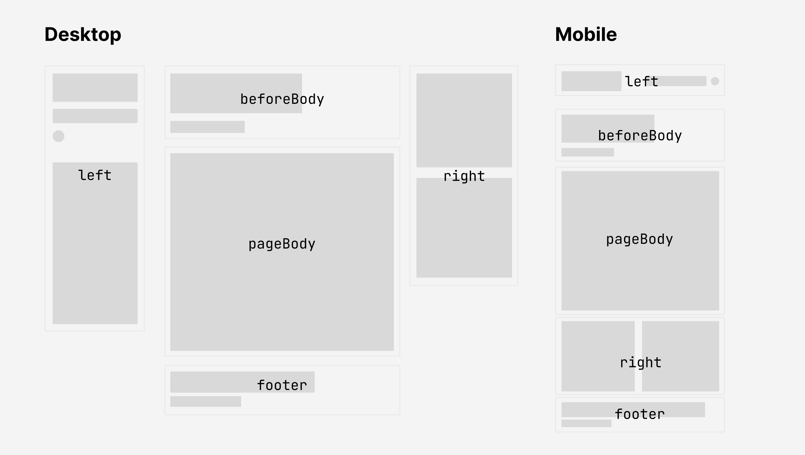

Certain emitters may also output HTML files. To enable easy customization, these emitters allow you to fully rearrange the layout of the page. The default page layouts can be found in quartz.layout.ts.
Each page is composed of multiple different sections which contain QuartzComponents. The following code snippet lists all of the valid sections that you can add components to:
export interface FullPageLayout {
head: QuartzComponent // single component
header: QuartzComponent[] // laid out horizontally
beforeBody: QuartzComponent[] // laid out vertically
pageBody: QuartzComponent // single component
left: QuartzComponent[] // vertical on desktop, horizontal on mobile
right: QuartzComponent[] // vertical on desktop, horizontal on mobile
footer: QuartzComponent // single component
}These correspond to following parts of the page:

Note
There are two additional layout fields that are not shown in the above diagram.
headis a single component that renders the<head>tag in the HTML. This doesn’t appear visually on the page and is only is responsible for metadata about the document like the tab title, scripts, and styles.headeris a set of components that are laid out horizontally and appears before thebeforeBodysection. This enables you to replicate the old Quartz 3 header bar where the title, search bar, and dark mode toggle. By default, Quartz 4 doesn’t place any components in theheader.
Quartz components, like plugins, can take in additional properties as configuration options. If you’re familiar with React terminology, you can think of them as Higher-order Components.
See a list of all the components for all available components along with their configuration options. You can also checkout the guide on creating components if you’re interested in further customizing the behaviour of Quartz.
Style
Most meaningful style changes like colour scheme and font can be done simply through the general configuration options. However, if you’d like to make more involved style changes, you can do this by writing your own styles. Quartz 4, like Quartz 3, uses Sass for styling.
You can see the base style sheet in quartz/styles/base.scss and write your own in quartz/styles/custom.scss.
Note
Some components may provide their own styling as well! For example,
quartz/components/Darkmode.tsximports styles fromquartz/components/styles/darkmode.scss. If you’d like to customize styling for a specific component, double check the component definition to see how its styles are defined.